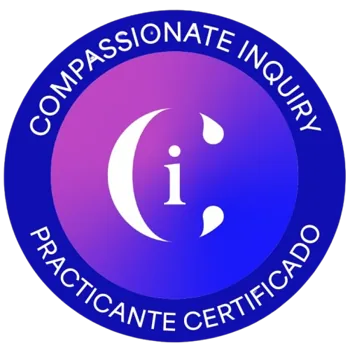

Comprender lo que sientes
Dar espacio a tus emociones y poner palabras a aquello que te está pasando.
ESCUCHA. PRESENCIA. COMPASIÓN.
Te acompaño a explorar tus emociones, comprender tus patrones y conectar con lo que necesitas. Con curiosidad, sin juicio y a tu ritmo.
Coaching basado en
Indagación Compasiva

Practicante certificadaCompassionate Inquiry®
01 / ACOMPAÑAMIENTO
Podemos empezar por lo que sientes hoy. Las sesiones son una invitación a observar tu mundo interno con atención y amabilidad.
Dar espacio a tus emociones y poner palabras a aquello que te está pasando.
Explorar creencias y formas de responder que se repiten en tu vida.
Acercarte a tus límites y a lo que es importante para ti, con mayor claridad.
EL ENFOQUE
La Indagación Compasiva —Compassionate Inquiry— es un enfoque creado por el Dr. Gabor Maté y Sat Dharam Kaur.
En mis sesiones de coaching, este enfoque guía una exploración de tus emociones, creencias y experiencias. A través de preguntas y una escucha atenta, te acompaño a comprender mejor lo que ocurre en ti.
No hay una forma correcta de sentir. Hay un espacio para escuchar, descubrir y respetar tu proceso.
Así podemos empezar02 / LAS SESIONES
Puedes preguntarme por el acompañamiento y contarme, si te apetece, qué estás buscando.
Consulta conmigo la modalidad, duración, honorarios y disponibilidad antes de concertar una sesión.
En la sesión exploramos lo que quieras traer, desde la escucha y el respeto por tu propio ritmo.
03 / SOBRE MÍ
La presencia, la curiosidad y la compasión son el punto de partida de mi manera de acompañar.
Soy practicante certificada en Compassionate Inquiry, experta en Coaching con Inteligencia Emocional por el Grupo Emociona y en Mindfulness en Desarrollo Personal y Educación Consciente por la Universidad de Almería.
Mis 30 años como profesora de flauta travesera me han llevado a observar cómo se relacionan nuestras emociones, pensamientos y cuerpo. La música, la creatividad y el mar forman parte de mi manera de encontrarme conmigo misma.
Confío en la capacidad de cada persona para descubrir sus propias respuestas. Mi intención es acompañarte respetando tus procesos y tus tiempos.
Practicante certificada en Compassionate InquiryVer mi perfil en el directorio oficial ↗04 / EXPERIENCIAS COMPARTIDAS
Una experiencia profundamente sanadora. Gracias al acompañamiento de Patricia pude trabajar temas que tenía bloqueados por el dolor y hoy los veo desde una perspectiva diferente. Las herramientas que compartió me siguen ayudando en mi día a día, incluso después de las sesiones.
Mi terapia con Patricia ha logrado en pocas sesiones lo que no logré en otras terapias en 4 años: no es hablar a lo loco; sino que es una guía para poder aterrizarte a un lugar positivo y constructivo.
Desde que inicié las sesiones con Patricia mi vida dio un giro enorme. Me posicioné con más autoridad y confianza en mis acciones. Puedo ahora reconocer mi cuerpo y su lenguaje, lo que me permite no detenerme en situaciones que ya no deseaba transitar. Miro la vida con más entusiasmo y deseo de compartir con otros. El dinero también se presenta más abundante y creé mi marca personal en el trabajo. Muchas gracias Patricia por tu saber y permitirme lograr la vida que quería. ¡Un cariño grande desde Argentina!
Desde el primer encuentro con Patricia sentí que estaba frente a alguien que realmente escucha. Su presencia es cálida y reconfortante, y su manera de acompañar te hace sentir comprendida y respetada. Cada sesión es como un espacio seguro donde puedo soltar, mirar hacia adentro y reconectar con lo esencial. Gracias a su guía, he empezado a vivir con más conciencia, paz y gratitud. Es un proceso que me está transformando profundamente, y no puedo estar más agradecida.
El acompañamiento de Patricia ha sido una luz en un momento de mucho ruido interno. Con suavidad y firmeza, me ha ayudado a reconocer mis emociones y a transitar mis procesos con amabilidad. Tiene una sensibilidad especial para saber cuándo sostener, cuándo guiar y cuándo simplemente estar. He aprendido a respirar mejor, a mirar con más compasión y a confiar más en mí. Su presencia ha sido un regalo inesperado que me está ayudando a florecer desde dentro.
Trabajar con Patricia está siendo una experiencia transformadora. Desde el primer momento se nota su interés genuino, su cariño en cada palabra y la atención que pone en cada detalle del proceso. Cada práctica me deja con una sensación de calma, claridad y bienestar. Aunque aún no he terminado el camino, siento que estoy en buenas manos y cada paso me acerca más a una versión de mí más serena, positiva y fortalecida. Estoy deseando ver en quién me voy a convertir gracias a este acompañamiento tan valioso.
ANTES DE EMPEZAR
Si tienes otra duda, puedes escribirme.
No necesitas conocer el enfoque para preguntar por las sesiones. Podemos hablar de cómo trabajo y resolver tus dudas antes de empezar.
Escríbeme para consultar la modalidad disponible y valorar cómo podemos organizar el encuentro.
Consulta conmigo la duración, los honorarios y la disponibilidad. Así podrás conocer las condiciones antes de concertar una sesión.
Una emoción, una situación que se repite, una pregunta sobre ti o algo a lo que quieras prestar atención. No necesitas traer un relato preparado.
Por WhatsApp o correo electrónico. Encontrarás ambos enlaces en la sección de contacto.
CUANDO LO SIENTAS, AQUÍ ESTOY
Escríbeme para resolver tus dudas y conocer cómo puedo acompañarte.
patricia.lisbona.ci@gmail.com